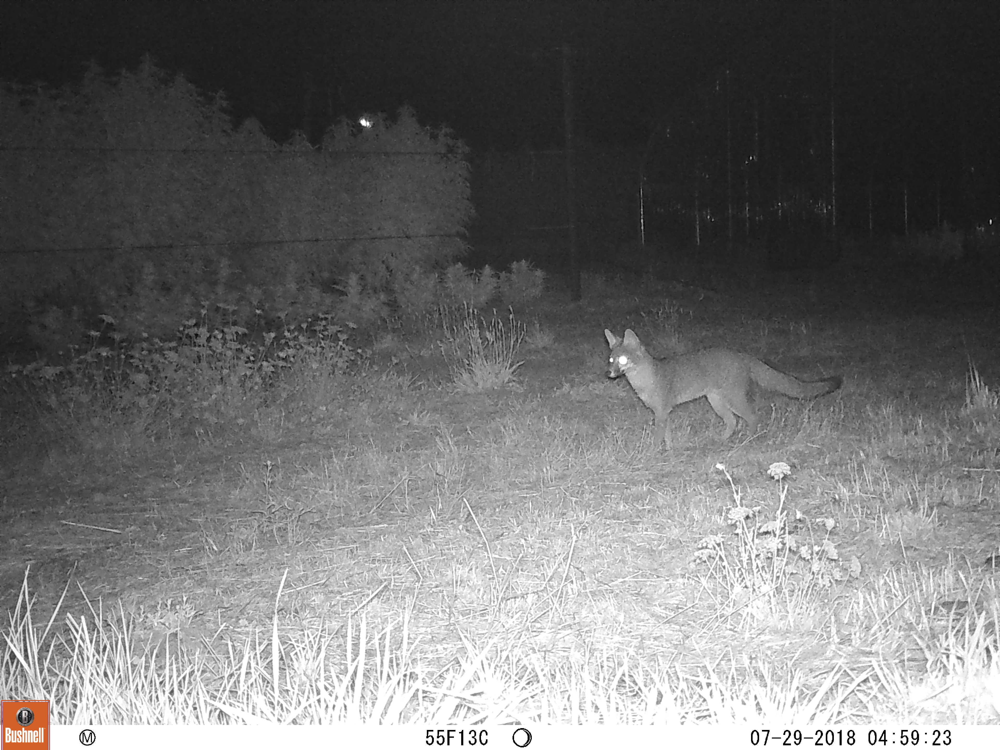

Cannabis land use change and wildlife
Cannabis agriculture in the Western US is a booming economy. However, it is also a massively understudied topic of research given its illicit history. Working with local cannabis farmers and community members, I am researching the effects of the industry and specific land use practices on wildlife in order to inform sustainable agricultural practices
My dissertation research is conducted in partnership with the Berkeley Cannabis Research Center. You can find out more about the center here.

Why study cannabis?
Studying cannabis is important if we want policies, regulations, and land use decisions that are informed by science and responsive to stakeholders. At this key moment of an emerging industry, research provides an opportunity to shape its future trajectory.
Because of cannabis’ history as a federally listed schedule I drug, there is very little research or information available on the scope of the industry and its interactions with local ecosystems. However, there are increasing concerns that the industry, if left unregulated and unstudied, could cause widespread environmental harm via land use development, habitat fragmentation, toxin bioaccumulation, sedimentation and runoff, noise and light pollution, etc.
The recent wave of statewide legalizations and increasing discussion of federal legalization makes cannabis a timely subject. Differing regulations across states or local jurisdictions provide a policy experiment to study effects on land use patterns as they unfold in real time.
Cannabis is a unique and increasingly pervasive crop. For example, in California the market is valued at over $20 billion and may be the state’s most valuable crop. However, the policies, culture, and history surrounding cannabis, far more than any qualities of the plant itself, have shaped the ways in which it is grown so that it stands apart as both more industrialized in practice and more parceled into many smaller farms.
The timeliness and importance of cannabis agriculture combine to make an ideal research opportunity. Statewide legalization in historical cannabis-producing regions of California and Oregon has set off a massive industry boom. This provides a window to study an agricultural industry at the beginning of its emergence into the legal market, which raises a host of interdisciplinary research questions relating to shifting cultural perceptions, barriers to compliance or economic access, development and fragmentation effects on wildlife, land sparing/sharing debates, and more.
My research approach
My dissertation focuses on understanding the ecological consequences of cannabis legalization. I am studying the intersections between policy, land use change, and wildlife responses via a four-part multi-disciplinary approach based in Southern Oregon and Northern California.
First, I am working to understand cannabis land use change by mapping out outdoor cultivation from publicly available Google Earth images. I will use this to look at the spatial configuration and location of the industry over time. This will produce a greater understanding of “Cannabis Landscapes.”
 ######Preliminary results from Google Earth mapping effort. Change in outdoor cultivation area from 2013 to 2016 in the Illinois Valley, Oregon, summarized in 5x5km grid cells.
######Preliminary results from Google Earth mapping effort. Change in outdoor cultivation area from 2013 to 2016 in the Illinois Valley, Oregon, summarized in 5x5km grid cells.
Second, I will work to interpret these land use changes and contextualize their drivers using interviews with cannabis farmers and cannabis policymakers.
Third, I am examining the distribution and interaction of wildlife across these cannabis landscapes. Working in partnership with local cannabis farmers and other land owners, I am using wildlife monitoring techniques to collect information on animals on farms and in surrounding areas. I will focus on mammal and bird community assembly, habitat use, and activity patterns in response to the spatial configuration of cannabis farms.
 ######Photo of a grey fox taken by a camera trap on partner farm East Fork Cultivars
Finally, I will conduct experimental manipulations of cannabis land use practices to understand the mechanisms of wildlife response to cannabis production. Focusing on cultivation practices that are either increasing in use (e.g., greenhouse cultivation using artificial grow lights) or are practices that growers identify as ones they would like to be able to manipulate (e.g., fencing), I can make better predictions on the ecological consequences of specific land use decisions.
Interested in participating in the research process?
I value stakeholder input into the work that I do and believe that research should be a two-way street. Much of my research is conducted in Josephine County, Oregon and Mendocino County, California, but I may expand my reach elsewhere. If you are interested in participating in this work or have any questions, please get in touch!